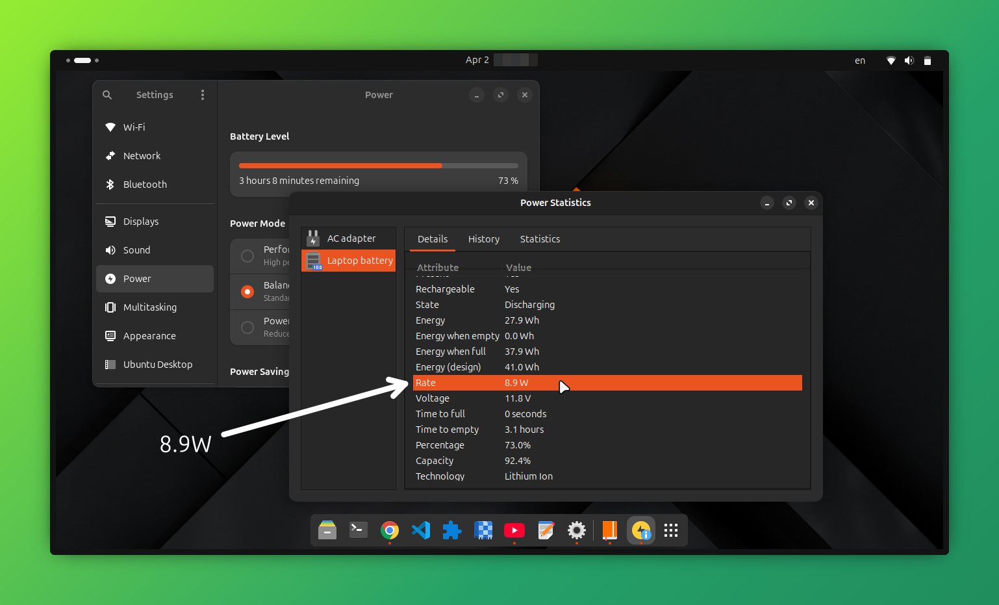
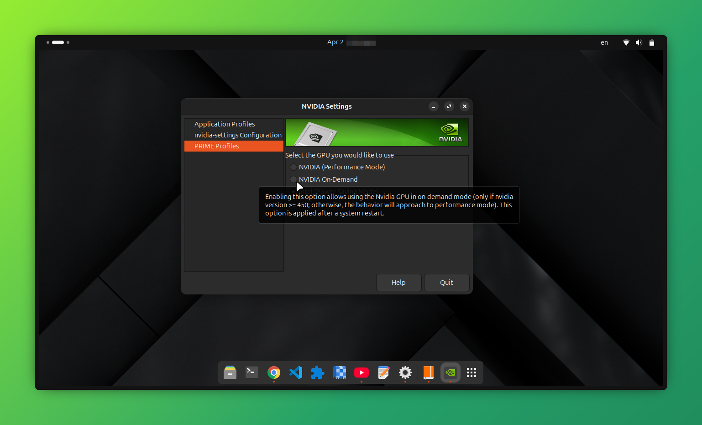

How I Finally Got Stable 60 FPS on Ubuntu laptop (NVIDIA + Intel)
Context
I’m running Ubuntu on an HP laptop with:
- Intel i5 (11th gen)
- NVIDIA MX350 (Optimus setup)
I was using Steam with the latest Proton (10.0-4) to play Warframe (Gold-rated on ProtonDB), and CS2 (native Linux).
The Problem
Playing games on an Ubuntu laptop was a horrible experience with an Nvidia GPU ,it was always mysterious and vague on why I had a terrible performance and inconsistent FPS problems .
It wasn't like because Linux can't game like any one would've thought ,but because gaming on a Linux laptop is pain .
I'm talking about having performance issues even on native Linux games which should not be possible unless if purposely slow down your laptop ,ahm ahm (yes it was that 🙄)
I had CS2 and CSGO(in the past) which is a native game... and it was Lagging ,How ? How am I lagging? I even deleted proton to be sure .
To be more clear ,most of the time I had my GPU usage on 100% but with an average of 27 fps and a lot unbearable stuttering 🤨 ,the laptop's fan was not ramping up much ,it's didn't reach it's maximum speed ,I know what my laptop can & can't do since I used to play on windows before ,I should get a consistent 60 FPS on certain graphical settings on both Warframe and CSGO ,well now it's CS2.
What I Tried (and failed)
I tried everything an average person would try:
- I tired rebooting
- Not rebooting😆 (you should rebooting after switching prime-profiles)
- Switching between Wayland from X11
- Reinstalling NVIDIA drivers
- Switching distros
- Launching games with terminal commands to use specify use of the discrete card (NVIDIA)
- Changing some settings in the NVIDIA X server settings
I still had my game stuttering and low FPS ,hmm
The Breakthrough & a small talk on power consumption
The issue wasn't really in the GPU ,the real bottleneck was the CPU governor ,let me explain how I got there .
Us laptop users care about the battery life and want to extend it much as possible.
Those who have dual graphics cards with an Optimus setup , iGPU + GPU (NVIDIA in my case) ,so ,I do turn
off my
NVIDIA card when I don't want to play any games ,using sudo prime-select intel .
And because intel drivers are great on linux ,I go on my daily life with the iGPU on wayland because it works fine.
Running the iGPU only has great benefits ,I get an average power consumption of 6W on idle and 10w~12w when multi tasking ,here I'm consuming 8.9w while having youtube running and other 9 chrome tabs open

It's very acceptable rate to be honest and it will be lower if I'm reading or coding ,it really depends on how active I am in the real time.
Okay here is that ,now to NVIDIA .
If you're like me and tried to keep your GPU card run on-demand because you will play games this week ,you will immediately get an 9w on idle and 14w~17w when multi tasking ,that GPU drains a lot of energy ,go ahead and check power statistics .
Well ,I would take that trade-off any time if I'm expecting a free time to play Warframe on-demand but it didn't work and I got a terrible performance ,I even tried performance mode ,only to consume more power and get no effects ,still lagging on NVIDIA ,I accepted it and blamed NVIDIA for not optimizing it's drivers which somewhat true ,hey ,if you wanna play ,just hop on windows🫤 ,that's what I thought until one day
So here I am one day ,retrying on-demand prime-profile after updating my NVIDIA drivers to the latest new
version
.
I got a terrible app loading time on system apps ,apps like settings ,umm hello? what is happening?

I always had almost 1 second loading time or even less when I had intel iGPU only on ,why is it taking more when I have my NVIDIA GPU on-demand ,it should have been faster.
So I jumped to ask an AI and gave it some logs ,it said that most of my systems are working normally :
1. ✅ NVIDIA kernel modules are loading (driver version 580.126.09)
2. ✅ NVIDIA Persistence Daemon is running
3. ✅ NVIDIA modesetting driver is loaded
4. ✅ Xorg is detecting and attempting to use the NVIDIA driverIssues Detected:
1. Critical DRM Errors (Lines 15-16):nvidia 0000:01:00.0: [drm] No compatible format found nvidia 0000:01:00.0: [drm] Cannot find any crtc or sizes
And some other issues ,four in total ,they don't matter for now.
It also said :
> The key issue: In on-demand mode, the NVIDIA GPU is essentially "asleep" until an application requests it. But the DRM subsystem is trying to initialize it at boot and failing because it can't find a display connected to it . This causes those No compatible format found errors.
Here's how to fix this:
Immediate Fix: Switch to NVIDIA Mode....
or blah blah blah ,Enable modesetting for NVIDIA ,Add kernel parameters: blah blah blah Test Application Offloading blah blah ,Create a minimal Xorg configuration for on-demand mode something something .
I have no idea what it was talking about ,but we don't need any of that because the solution is very simple🙂.
I had to stop the AI from overthinking and gave it all my notes on all behaviors I noticed happening in my system ,that helps AI a lot.
At the end ,It's all because of power modes .The GPU isn't the main factor ,the real bottleneck is the CPU governor but it's not that simple unless you know.
here is some data I got after running some tests on each power-mode using
time gnome-control-center
| Mode | CPU Governor | Settings Open Time |
|---|---|---|
| Intel | powersave | 3.5s - 4.0s |
| Intel | performance | 1.8s - 2.1s |
| NVIDIA | powersave | 2.3s - 2.4s |
| NVIDIA | performance | ? (probably ~1.5s) |
Step-by-Step Fix
I will take the AI's words here and paste them here since it explains it better than me :
The Root Cause
On Optimus laptops, the NVIDIA GPU doesn't directly connect to the display - it renders frames and passes them through the Intel GPU. This causes two main issues:
- DRM errors are NORMAL - The "No compatible format found" errors happen because NVIDIA tries to initialize a display controller that doesn't exist. They're harmless!
- CPU governor is the REAL culprit - Even when you select "Performance" mode in GNOME, the actual CPU governor often stays on powersave, causing 2-4 second delays in app launches.
> My comment here: Gnome power profiles are not always true, you can set you laptop's power profile on performance but still have the CPU governor on powersave , gnome power profile lies? .
The Solution
Step 1: Proper GPU Switching
#!/bin/bash
set_governor() {
echo "Setting CPU governor to $1..."
echo $1 | sudo tee /sys/devices/system/cpu/cpu*/cpufreq/scaling_governor
echo "Current governor:"
cat /sys/devices/system/cpu/cpu0/cpufreq/scaling_governor
}
echo "Select GPU Mode:"
echo "1) Intel (Power Saving)"
echo "2) NVIDIA (Performance)"
read -p "Enter choice [1 or 2]: " choice
if [ "$choice" == "1" ]; then
echo "Switching to Intel mode and power-saver profile..."
sudo prime-select intel
powerprofilesctl set power-saver
set_governor "powersave"
elif [ "$choice" == "2" ]; then
echo "Switching to NVIDIA mode and performance profile..."
sudo prime-select nvidia
powerprofilesctl set performance
set_governor "performance"
if [ -f /sys/devices/system/cpu/intel_pstate/energy_performance_preference ]; then
echo "performance" | sudo tee /sys/devices/system/cpu/intel_pstate/energy_performance_preference
fi
for cpu in /sys/devices/system/cpu/cpu*/power/energy_perf_bias; do
echo "performance" | sudo tee $cpu 2>/dev/null
done
else
echo "Invalid choice."
exit 1
fi
echo ""
echo "Final verification:"
echo "GPU Mode: $(prime-select query)"
echo "Power Profile: $(powerprofilesctl get)"
echo "CPU Governor: $(cat /sys/devices/system/cpu/cpu0/cpufreq/scaling_governor)"
echo ""
echo "Done. Please reboot for changes to take full effect."
Key Takeaways
- DRM errors are red herrings ,don't waste time fixing them on Optimus laptops.
- CPU governor matters more than you think ,powersave can add 2-3 seconds to app launches because it will slow down everything to save power ,it works so well.
- GNOME's power profiles don't always set the CPU governor ,You need to do it manually if you know you are gaming soon.
- Systemd services are your friend ,use them to enforce settings across reboots.
Credits
This solution was developed through collaborative troubleshooting with DeepSeek AI, an incredible coding assistant that helped diagnose the real issues, understand the logs, and craft these practical solutions.
Yeah yeah AI is helpful but here is what you should know as rule of thumb:
On intel only, the intel prime-profile prime-select intel:
- Power Saving profile: System slows down (~3-4s app launch), great battery life (4+ hours)
- Performance profile: System speeds up (~1.8s app launch), but uses more battery.
- Verdict: GNOME power profiles actually work here! Switching between powersave/performance changes CPU behavior noticeably.
On NVIDIA only ,the NVIDIA prime-profile prime-select nvidia:
- Without fixes: System slow (~3s) even with "Performance" selected in GNOME power modes.
- With our fixes: System fast (~1.5s), gaming at 60 FPS
- Verdict: GNOME power profiles are IGNORED here for some reason ,you must manually set CPU governor
On on-demand , the on-demand prime-profile prime-select on-demand:
- What should happen: Desktop runs on Intel (saving power), games auto-switch to NVIDIA
- What actually happens:
- Desktop is slow (CPU stuck on power-save)
- Games don't properly activate NVIDIA (30 FPS instead of 60)
- Worst of both worlds - no battery savings AND no performance
- Verdict: Great idea in theory, but implementation needs work, the NVIDIA drivers for linux laptops could be improved on Ubuntu laptops .
The Moral of the Story
Linux on Optimus laptops is almost there. The hardware works, the drivers work, but the integration between:
- prime-select (GPU switching)
- powerprofilesctl (GNOME power profiles)
- CPU governors
It is still a bit rough. Until it's polished, manual control with simple scripts is the way to go.
Results
- Stable 60 FPS
- No stuttering
- Fans behaving normally
- The laptop is using its full power.
What I Learned
One thing I didn’t expect to learn:
Windows handles all of this silently and you only realize how much work it’s doing when you switch away
from it.
On Linux, you get control… but sometimes you have to earn it.
bye - see you later.